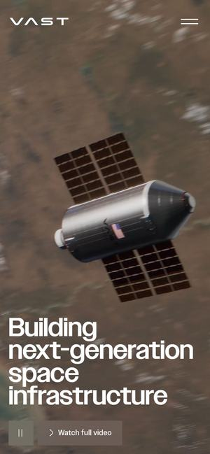
웨비 어워드 수상 · 2026 과학먼저 보세요01유바이오로직스가 이미 가진 재료
WHO PQ 백신 4종 · 51개국 공급 · 춘천 1·2공장과 3공장 계획 · 자체 백신 플랫폼 3가지. 재료는 충분합니다. 리뉴얼은 이 재료를 첫 화면에서 ‘보이게’ 만드는 일입니다.
- 세계 최초 플라스틱 튜브 콜레라 백신유비콜®-플러스(2017년 WHO PQ)와 생산성을 높인 유비콜®-에스(2024년). 손바닥만 한 튜브 하나가 그대로 첫 화면 주인공이 될 수 있습니다.
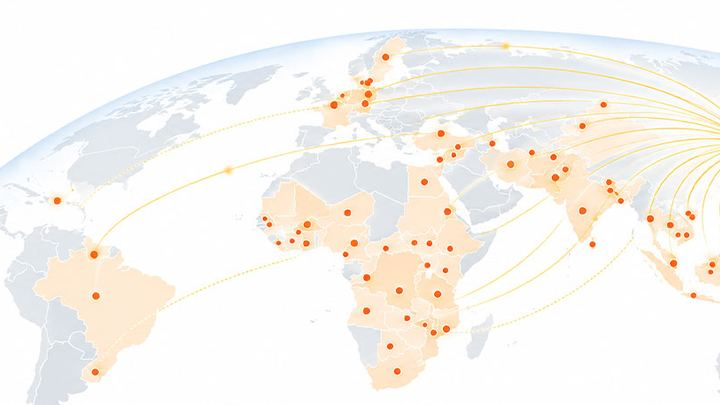
51개국 · 2.7억 도즈유니세프 등 국제기구 공공조달로 공급한 누적 기록(2026년 9월 기준). 공급 지도 그림도 이미 회사개요 화면에 있습니다.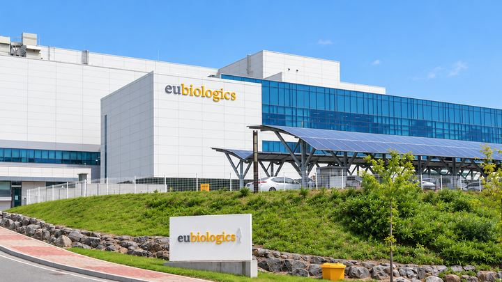
춘천의 공장들1공장(C-Plant)·2공장(V-Plant) 실사 사진과 배양기·충전 라인·연구실 사진, 2028년 준공 목표인 3공장(V3)까지.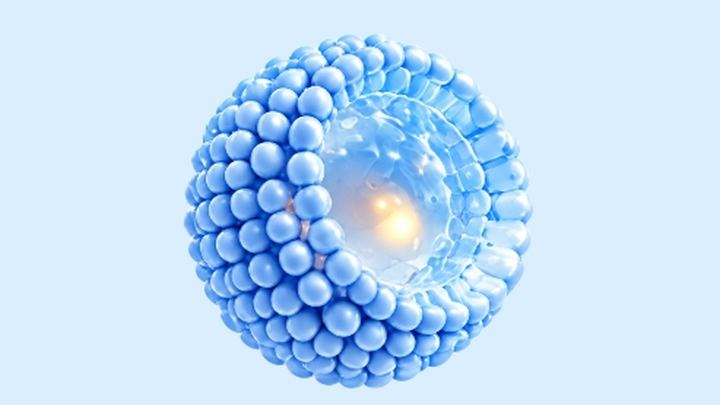
자체 백신 플랫폼 3가지단백 접합(EuVCT™) · 면역증강(EuIMT™) · 항원 디스플레이(SNAP™). 작용 원리를 3단계 그림으로 이미 그려 두었습니다.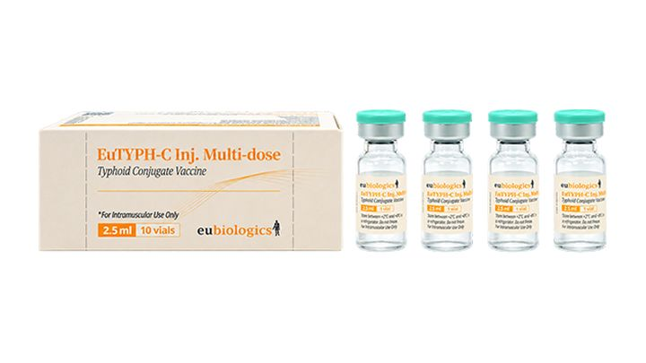
콜레라 다음, 장티푸스유티프씨주®는 홈페이지 연혁에 ‘세계 5번째 장티푸스 접합백신’(2026.08)으로 올라 있습니다. 수막구균·대상포진·RSV까지 파이프라인이 이어집니다.
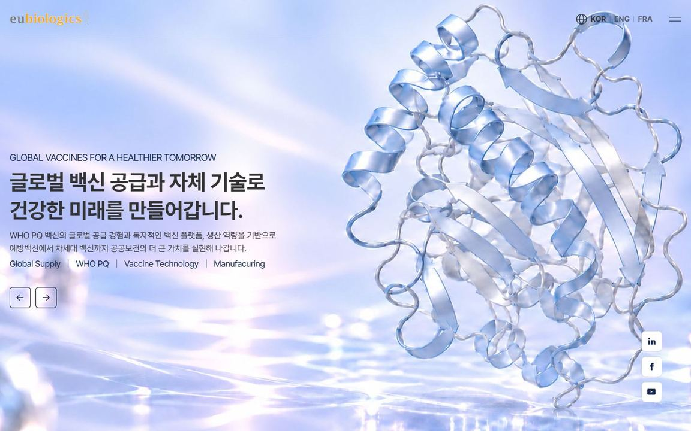
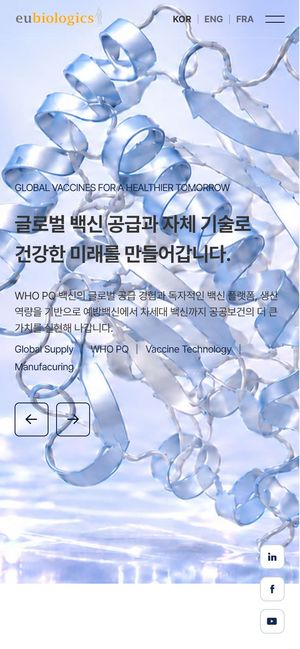
- 첫 화면 세 장이 모두 합성 그림입니다단백질 리본 · 유리 지구 · 약병 3D 그림이 번갈아 나옵니다. 실제 튜브 · 공장 · 생산 현장 사진은 아래쪽 작은 칸에만 있습니다.
- 51개국 공급이 숫자로만 보입니다회사개요 안쪽에 있는 세계 공급 지도 그림이 첫 화면에는 없습니다. 가장 큰 자랑이 숫자 세 개로 지나갑니다.
- 휴대폰에서는 제목이 그림 위에 겹칩니다첫 화면 제목 글자가 단백질 그림 위에 겹쳐 있고, 오른쪽 SNS 버튼 3개가 내려가는 내내 카드 위를 덮습니다.
- 첫 화면 메뉴에 철자 하나가 빠져 있습니다‘Manufacuring’(t 빠짐)이 첫 화면에 그대로 보입니다. 리뉴얼 때 함께 바로잡으면 됩니다.
“대박이에요”가 나오는 세 가지 장치
- 1첫 화면 주인공은 진짜 튜브와 진짜 공장합성 그림 대신 유비콜® 튜브와 춘천 생산 라인 실사 영상으로 시작합니다. ‘이 회사가 직접 만든다’가 3초 안에 전해집니다.
- 22.7억 도즈가 51개국으로 가는 길숫자 세 개를 지도 한 장으로. 내려갈수록 춘천에서 출발한 선이 공급 국가로 하나씩 이어집니다.
- 3백신 기술은 한 장면씩EuVCT™ · EuIMT™ · SNAP™의 3단계 원리 그림을 스크롤 장면으로 바꿔, 투자자도 30초면 기술을 이해하게 합니다.
A
해외 수상작 — 바이오·과학, 그리고 공장과 공급망
Awwwards · 웨비 어워드에서 2023~2026년에 상을 받은 해외 사이트 11곳입니다. 바이오·제약·과학 회사와, 공장·공급망을 보여 준 회사 위주로 골랐습니다. 수상 배지는 시상 페이지에서 날짜까지 확인한 것만 달았습니다(웨비는 연도만 공개).
Awwwards 오늘의 사이트 목록 ↗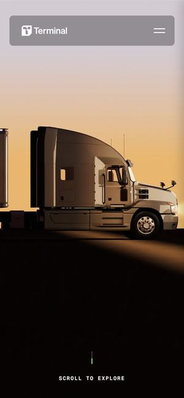
Awwwards 이달의 사이트 · 2025.09먼저 보세요02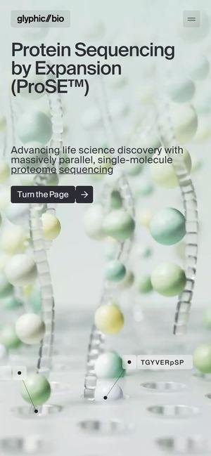
Awwwards 오늘의 사이트 · 2025.11먼저 보세요03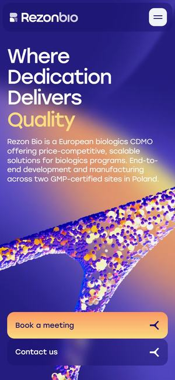
웨비 어워드 우수작 · 2026 과학04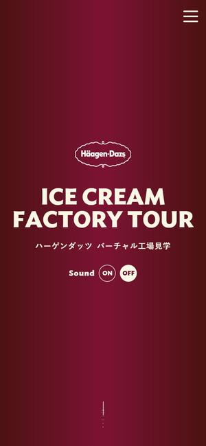
Awwwards 우수작 · 2024.0405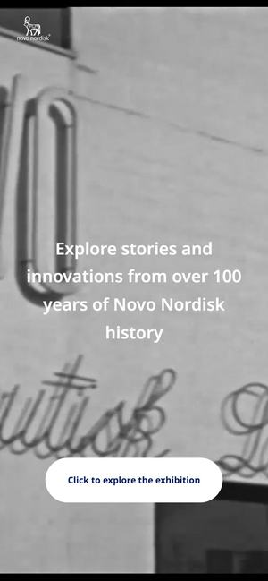
Awwwards 오늘의 사이트 · 2023.0906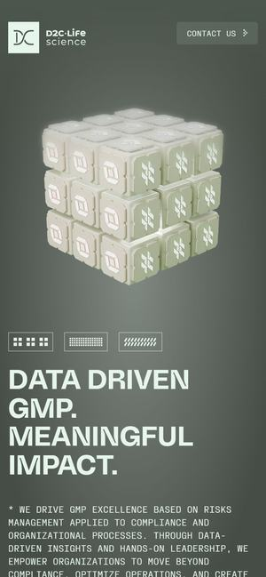
Awwwards 오늘의 사이트 · 2026.0207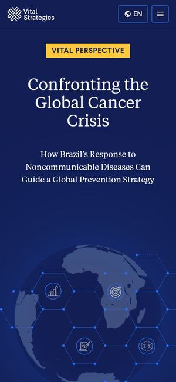
웨비 어워드 우수작 · 2026 헬스08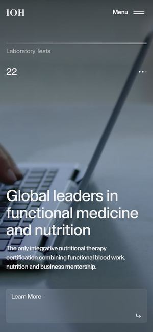
Awwwards 우수작 · 2026.0209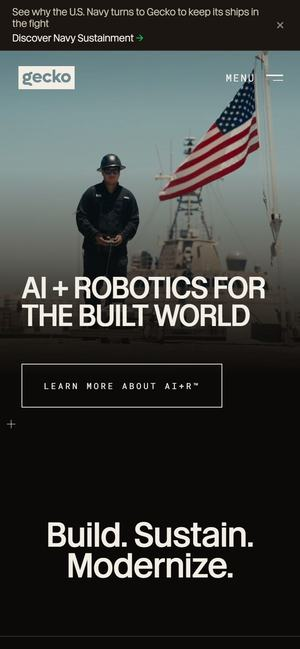
Awwwards 우수작 · 2024.1010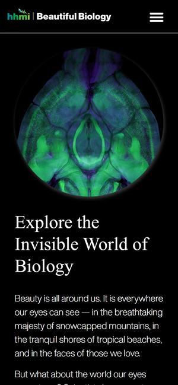
웨비 어워드 수상 · 2025 과학11
B
국내 수상작 — 제약·바이오와 대형 제조
지디웹 · 웹어워드코리아에서 2024~2025년에 상을 받은 국내 사이트 8곳입니다. 같은 업계(GC녹십자·셀트리온 등)와, 공장·숫자를 잘 보여 준 대형 제조사를 함께 넣었고, 지금도 수상 당시 디자인 그대로인지 수상 이미지와 대조했습니다.
지디웹 수상작 목록 ↗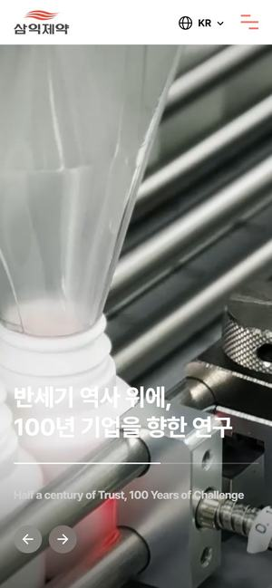
지디웹 GRAND PRIZE · 2025.11먼저 보세요12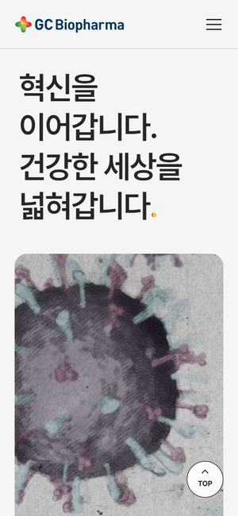
지디웹 GOLD PRIZE · 2025.11먼저 보세요13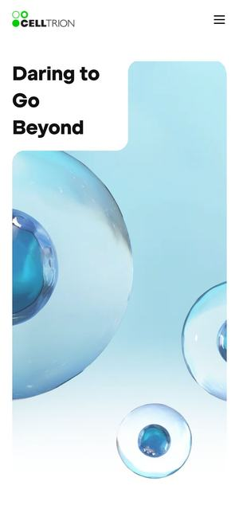
지디웹 GRAND PRIZE · 2024.0514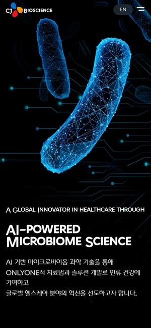
지디웹 GOLD PRIZE · 2024.0715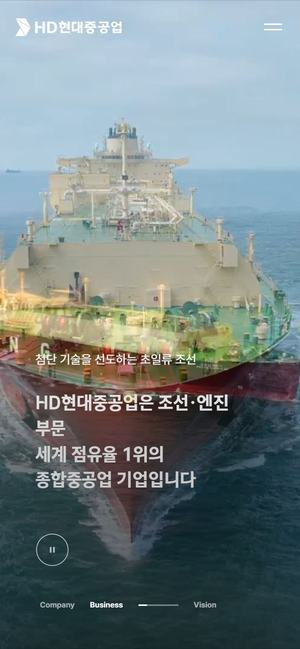
지디웹 GRAND PRIZE · 2025.0816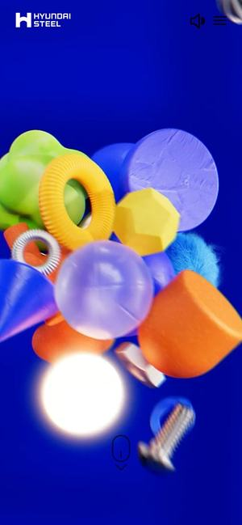
지디웹 GOLD PRIZE · 2025.0217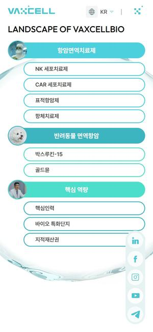
지디웹 WINNER PRIZE · 2025.0318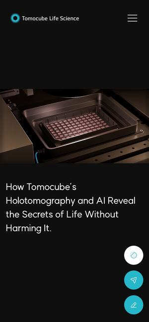
지디웹 SILVER PRIZE · 2024.0319
C
디자인 에이전시 4곳 — 페이브 · 더즈인터랙티브 · 이모션글로벌 · 플러스엑스
네 회사가 실제로 만든 사이트 중 지금도 그 디자인 그대로 열리는 곳만 골랐습니다. 회사마다 결이 달라, 어느 회사의 결이 유바이오로직스에 맞는지 나란히 비교해 보실 수 있습니다.
C1
페이브(FAVE) — 3D가 살아 움직이는 사이트
3D 선박·세포·오브제를 화면 위에서 실시간으로 움직이는 데 강한 개발 스튜디오입니다. 참고로 B 묶음 셀트리온 첫 화면의 ‘떠다니는 세포’는 페이브 랩에 공개된 실험작(Living cells)과 같은 파일을 씁니다.
페이브 작업 목록 ↗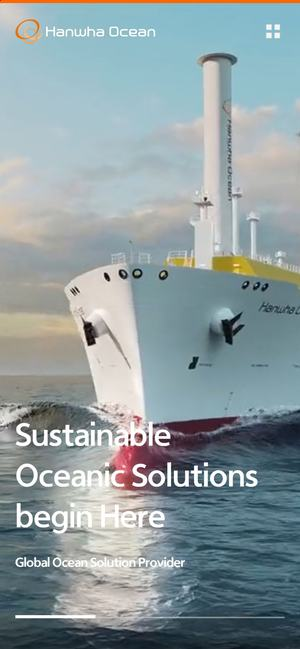
20한화오션 (영문)
와 포인트돛 단 배, 물속의 잠수함 — 장면이 바뀔 때마다 영상이 화면을 가득 채웁니다. ‘3D LNG선’ 페이지는 배가 스크롤에 따라 돌고 화물 용량 숫자가 굴러 올라갑니다.
유바이오로직스라면유비콜®-플러스 튜브를 3D로 돌리며 ‘세계 최초 플라스틱 튜브’의 구조를 보여 주는 제품 페이지, 공장 영상이 화면 가득 커지는 첫 화면 전환에.
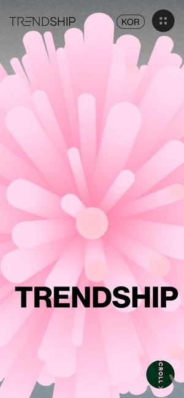
21LX하우시스 트렌드십 2025
와 포인트회색 화면 가운데 막대 수백 개가 뻗은 분홍 3D 오브제, 그 아래 화면 폭을 꽉 채운 큰 글자. 내려가면 큰 글자 사이 구멍으로 영상이 들어옵니다.
유바이오로직스라면SNAP™ 리포좀 표면에 항원이 돋은 입자를 3D로 띄우고 화면 폭 글자로 ‘51 Countries’ — 플랫폼 기술을 한 장면으로 각인시킵니다.
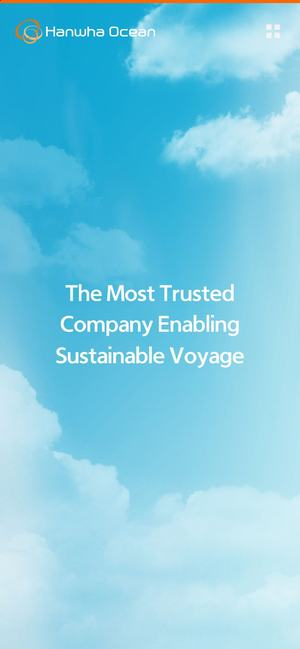
22한화오션 지속가능경영
와 포인트하늘과 구름 위 한 문장으로 시작해, 내려가면 구름이 수면으로 이어지는 차분한 전환.
유바이오로직스라면콜레라·장티푸스는 물과 위생의 문제 — ‘깨끗한 물’ 이미지 위 공공보건 한 문장으로 여는 지속가능경영 페이지에.
C2
더즈인터랙티브(DOES) — 대기업 사이트를 통째로
한화·현대차·삼성 같은 대기업 사이트를 기획부터 3D·개발까지 맡는 곳입니다. 풀스크린 영상, 직접 만든 3D 화면, 가상 쇼룸이 특징입니다.
더즈 작업 목록 ↗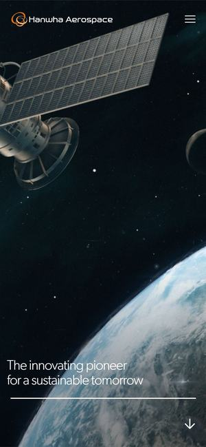
ICT 어워드 코리아 GOLD · 202323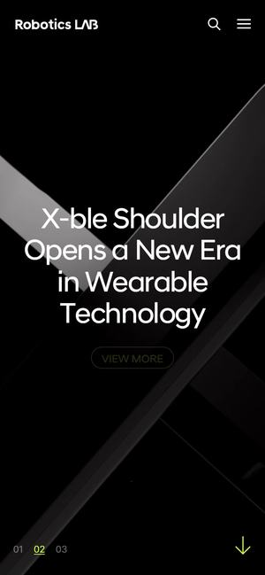
iF 디자인 어워드 2023먼저 보세요24현대차그룹 로보틱스랩
와 포인트검은 무대 위에 로봇을 하나씩 세우고, 뒤에 큰 이름이 흐리게 깔립니다. 내려갈 때마다 다음 로봇으로 바뀌는 제품 쇼케이스.
유바이오로직스라면유비콜® · 유비콜®-플러스 · 유비콜®-에스 · 유티프씨주®를 한 화면에 하나씩 무대 위에 세우는 제품 라인업 섹션으로 그대로.
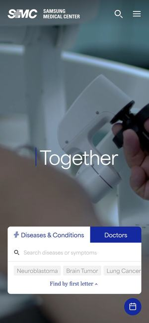
ICT 어워드 코리아 PLATINUM · 2026 의료25삼성서울병원 (영문)
와 포인트의료 현장 영상 위로 ‘Care · Happy Together’가 타자 치듯 바뀌고, 바로 아래 질환·의사 찾기 검색 카드가 붙습니다. 오른쪽 아래 ‘진료 예약’ 버튼이 늘 떠 있습니다.
유바이오로직스라면해외 조달 기관·파트너가 주로 보는 영문 사이트에 — 첫 화면 영상 위 ‘제품·기술 찾기’ 검색과 늘 떠 있는 ‘CRMO 문의’ 버튼.
C3
이모션글로벌(emotion) — 정보 많은 상장사를 깔끔하게
대기업·상장 제조사 사이트를 많이 만든 곳입니다. 풀스크린 영상 위에 주가·IR·뉴스를 정돈해 얹는 데 강하고, 2024년 웹어워드코리아 대상을 두 개(OCI·서울반도체) 받았습니다.
이모션 작업 목록 ↗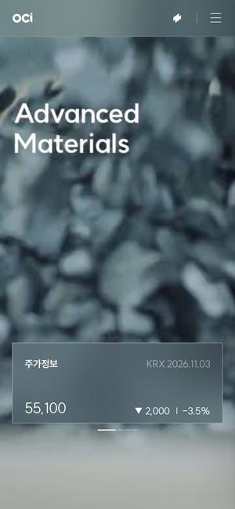
웹어워드코리아 대상 · 2024 금속/화학먼저 보세요26OCI
와 포인트공장 관제실·원료 장면 영상이 첫 화면을 채우고, 오른쪽 유리 패널에 실시간 주가·IR 자료·최근 뉴스가 붙어 있습니다. 정보가 많은데도 영상이 주인공입니다.
유바이오로직스라면코스닥 상장사에 딱 맞는 구성 — 춘천 생산 현장 영상 + 오른쪽 패널에 주가·IR 자료·‘2.7억 도즈, 51개국’.
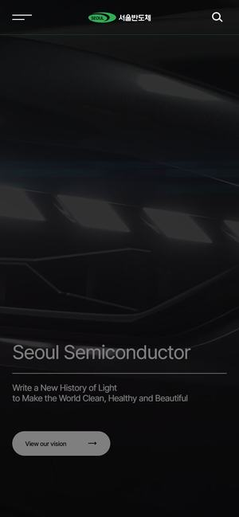
웹어워드코리아 대상 · 2024 부품27서울반도체
와 포인트검은 3D 공간에 빛나는 LED 칩이 떠 있는 첫 화면. 내려가면 적용 분야 목록과 실물 사진·도면 카드가 이어집니다.
유바이오로직스라면칩 자리에 유비콜® 튜브나 항원 입자를 — 작은 제품을 ‘첨단 기술’로 보이게 하는 방법.
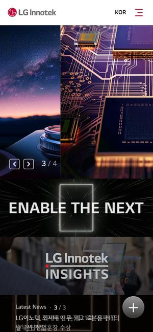
28LG이노텍
와 포인트빛나는 부품과 미래형 자동차가 어우러진 첫 화면 슬라이드. 아래 제품 정보는 부품을 크게 확대한 사진 카드로 이어집니다.
유바이오로직스라면운반단백질 rCRM197™·면역증강제 EcML™처럼 눈에 안 보이는 B2B 제품을 크게 확대한 이미지 카드로 — 제품 페이지에.
C4
플러스엑스(Plus X) — 브랜드부터 만드는 곳
로고·브랜드 경험(BX)이 주력이라 웹사이트 작업은 많지 않습니다. 공개 작업 146건 중 지금 그 디자인 그대로 열리는 웹사이트 2곳을 넣었습니다. 유일한 제약 사례였던 SK바이오팜 ‘ZERO’ 사이트는 지금 열리지 않아(서버 오류) 넣지 못했습니다.
플러스엑스 작업 목록 ↗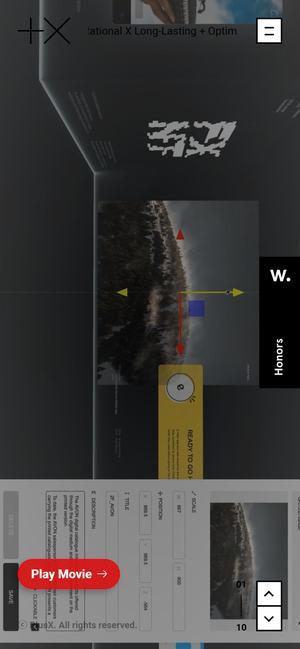
Awwwards 우수작 · 2020.052930
유닉스 (UNIX)
와 포인트제품 사진 한 장 + 한 줄 문구 + 버튼 하나로 끝나는 첫 화면. 넓은 여백이 제품을 고급스럽게 만듭니다.
유바이오로직스라면유비콜®-플러스 튜브 실사 한 장에 ‘세계 최초 플라스틱 튜브 경구용 콜레라 백신’ 한 줄 — 가장 단정한 제품 첫 화면.
추천 조합 — 고객에게 이 순서로 보여주세요
추천 1안 · 해외 수상작에서
실사로 여는 백신 회사 — 주 레퍼런스 Vast
V-Plant 클린룸 실사 영상 한 편으로 첫 화면을 열고(Vast), 춘천에서 51개국까지의 공급 여정(Terminal), 플랫폼 기술 3단계 장면(Glyphic), V-Plant 가상 견학(하겐다즈)으로 이어 갑니다. 해외 수상작 수준의 첫인상이라 국내 같은 업계 사이트와 확실히 달라 보입니다.
2안 · 국내 수상작에서
작은 튜브 하나로 — 주 레퍼런스 삼익제약
충전 라인 실사 영상과 ‘작은 튜브 하나로’ 문장(삼익제약), 페이지를 꿰는 주황 한 줄(GC녹십자), 점 지구본 위 공급 숫자(CJ바이오사이언스), 파이프라인 원 지도(박셀바이오). 국내 제약 수상작 문법이라 가장 익숙하고 안전합니다.
다음 단계 — 고르신 레퍼런스로 유바이오로직스 첫 화면 시안
이번에는 레퍼런스만 찾았고 시안은 만들지 않았습니다. 아래 추천 조합(출처별 1곳씩) 중 방향을 골라 주시면, 그 레퍼런스의 디자인 체계를 그대로 살려 유바이오로직스 실제 사진(유비콜® 튜브 · 춘천 공장 · 공급 지도)으로 첫 화면 시안을 만들겠습니다.